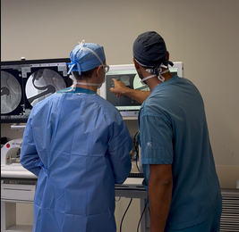
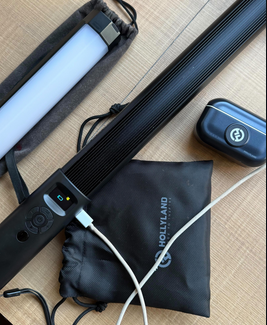
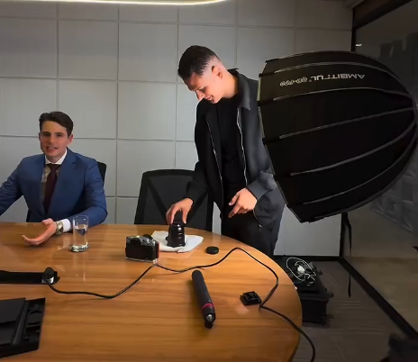
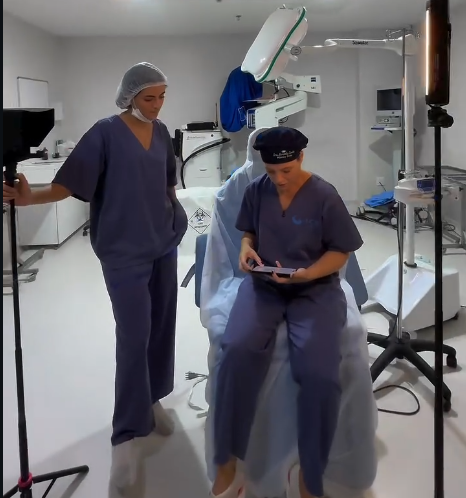
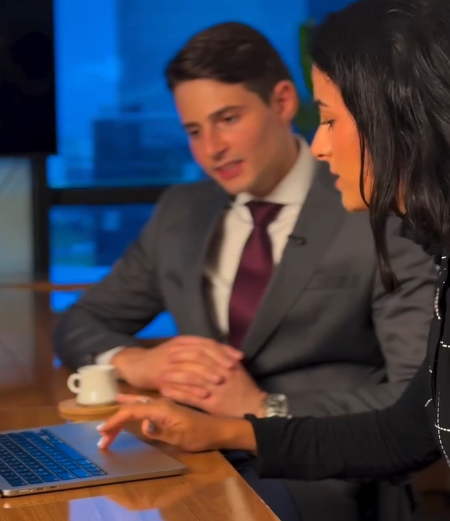
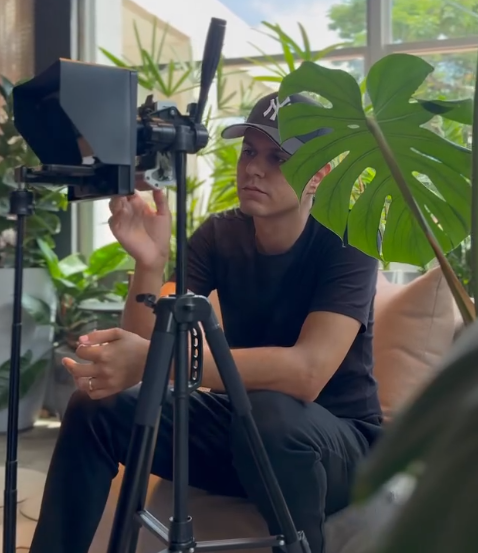

Posicionamento premium
conteúdo com estética, estratégia e credibilidade
Criamos posicionamento, conteúdo, branding e produção audiovisual para médicos, clínicas e consultórios que não querem apenas aparecer — querem ser lembrados, desejados e reconhecidos como referência.


Médicos e especialistas atendidos
Conteúdos produzidos em projetos exemplo
Taxa de satisfação apresentada como placeholder
Anos de especialização no nicho de saúde
A nossa proposta é unir profundidade estratégica com uma direção de arte que valoriza o profissional de saúde como marca. Não basta publicar. É preciso construir uma imagem coerente, memorável e digna da excelência clínica.
Enquanto agências comuns entregam posts, nós desenhamos presença. Da narrativa ao visual, do roteiro à captação, da identidade à autoridade.
Estratégia pensada para médicos, clínicas e consultórios, com linguagem, sensibilidade e direção compatíveis com o setor.
Branding, audiovisual e social media pensados para elevar credibilidade, sofisticação e lembrança de marca.
Nada é produzido sem diagnóstico, narrativa, pilares editoriais e clareza do posicionamento desejado.
Não usamos a mesma fórmula para todos, nossos serviços são personalizados para cada profissional e especialidade.
Definição de narrativa, diferenciais, universo visual, voz da marca e direcionamento editorial para ocupar um lugar claro no mercado.
Captação em consultório, bastidores, rotina médica, depoimentos, vídeos de autoridade e reels com acabamento mais sofisticado.
Planejamento, roteiro, design, legenda e direção criativa para transformar o feed em um ativo de valor para a marca médica.

Desenvolvimento de universo visual, materiais institucionais, apresentação, papelaria e desdobramentos da marca.
Campanhas para ampliar alcance, reforçar autoridade e levar a mensagem certa ao público mais relevante da especialidade.




Trabalhamos com as mais diversas especialidades da medicina.
 Cardiologia
Cardiologia
 Dermatologia
Dermatologia
 Cirurgia Plástica
Cirurgia Plástica
 Ginecologia
Ginecologia
 Ortopedia
Ortopedia
 Odontologia
Odontologia
 Clínicas
Clínicas
 Consultórios
Consultórios
Desafios que nossos clientes nos entregaram e que resolvemos com êxito.

Desafio: construir autoridade digital sem perder elegância e credibilidade médica.
Solução: branding, linha editorial, produção audiovisual e gestão de presença digital.
Desafio: unir imagem premium com conteúdo educativo e desejo de marca.
Solução: direção visual, captação em consultório e calendário de conteúdo com foco em percepção de valor.

Desafio: unificar especialistas sob uma imagem institucional mais forte.
Solução: reposicionamento visual, organização da comunicação e materiais estratégicos de apresentação.
Entendimento do momento da marca, concorrência, especialidade e objetivo.
Definição de narrativa, diferenciais, estética e linha editorial.
Captação de imagens, vídeos, bastidores e materiais com padrão premium.
Publicação estratégica, campanha, organização do feed e consistência de marca.
Análise de resultados, ajustes de percepção, performance e crescimento.
★★★★★“Em poucos meses, minha presença deixou de parecer improvisada. Passei a comunicar minha medicina de um jeito muito mais forte e coerente.”
★★★★★“A diferença não foi só estética. A agência ajudou a organizar percepção de valor, narrativa e autoridade.”
★★★★★“Finalmente encontrei uma equipe que entende imagem, estratégia e a delicadeza da comunicação na área da saúde.”
Nossa equipe está pronta para te guiar nessa jornada. Profissionais qualificados, atendimento personalizado e resultados de qualidade.

Nossa equipe vai retornar em breve.